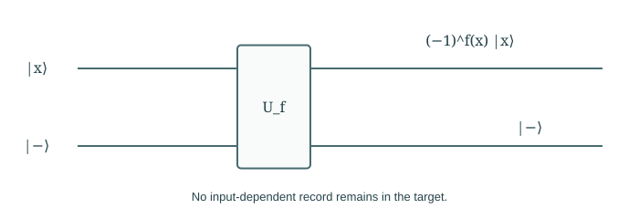
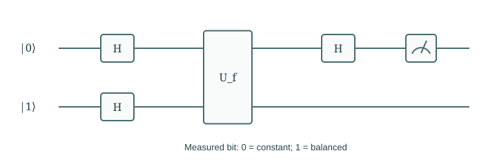

Chapter 06
Quantum Queries and Phase Kickback
A quantum query can evaluate a function coherently, but readout remains restricted. A small decision problem shows how to encode a useful property in phase and turn it into a certain measurement result.
In this chapter · 4 sections · 12 topics
6.1
Function Queries
Specify the requested property and the access interface before comparing algorithms.
6.1.1 Constant and balanced Boolean functions§
Let \(f:\{0,1\}\to\{0,1\}\). The task is to determine whether \(f(0)=f(1)\). Such a function is constant if they agree and balanced if they differ. For this one-bit domain these exhaust all possibilities; for larger domains, restricting attention to constant or balanced functions is a genuine promise. We need one property, not a printed list of both function values. This distinction between the requested answer and the full data guides the quantum algorithm.
6.1.2 Classical query access§
A classical query chooses \(x\) and receives \(f(x)\). One query cannot settle this task with certainty: either observed value is compatible with both a constant and a balanced function, depending on the unqueried value. Two queries suffice. The comparison is exact and uses a specified access interface. It does not claim that every classical computation related to the function needs two physical operations. If the function’s description is supplied in a different form, the access model and the comparison may change.
6.1.3 Reversible quantum oracles§
The quantum interface is the reversible oracle \[U_f\ket{x,y}=\ket{x,y\oplus f(x)}.\] On basis states it permutes labels and is its own inverse, so its linear extension is unitary. The input register is retained. A query means one use of this specified operation, even when the input is a superposition. The black-box model counts uses without charging for the internal construction of \(U_f\). This abstraction isolates information access; later circuit analysis must restore costs hidden inside the box.
6.2
Coherent Function Evaluation
Linearity supplies a joint state; it does not automatically supply a readable answer.
6.2.1 Oracle action on superpositions§
With a clean target, a query gives \[U_f\left(\frac{\ket0+\ket1}{\sqrt2}\otimes\ket0\right)=\frac{\ket{0,f(0)}+\ket{1,f(1)}}{\sqrt2}.\] This follows directly from linearity and the basis definition. There is no step that individually reads both outputs into a classical memory. The state contains coherent relationships among amplitudes. Whether those relationships help depends on the next transformation and on which measurement is made.
6.2.2 Register measurement§
Measuring both registers immediately returns one random pair \((x,f(x))\). It does not return the two values required for the classical exact solution. Preparing the same state again can yield more samples, but sampling is not the desired one-query advantage. A useful algorithm must convert the property “equal or different” into a distinction between measurable final states. Simply evaluating in superposition has not finished the computation.
6.2.3 Workspace entanglement§
If \(f(0)\ne f(1)\), the target stores orthogonal records of the two inputs. Applying H only to the input cannot make those distinct joint alternatives cancel each other as though their target records were identical. Their contributions must still be grouped by the complete output label. This is the same path-record effect introduced in Chapter 3. Rather than discard the record, we can choose a target preparation that returns to itself while transferring the function information into phase.
6.3
Phase Kickback
A carefully chosen target transfers the function value to an input-dependent sign.
6.3.1 Bit-flip eigenstates§
The state \(\ket-=(\ket0-\ket1)/\sqrt2\) satisfies \(X\ket-=-\ket-\). Therefore a conditional bit flip multiplies this target by a sign without changing its physical state. If no flip occurs, the sign is positive. This eigenvector property is precisely what the oracle’s target needs. It is not enough to call the target a “minus state”; the calculation \(X(\ket0-\ket1)=\ket1-\ket0\) supplies the reason it transfers a bit value into a sign.
6.3.2 Phase-oracle construction§
For each input label, \[U_f\ket x\ket-=(-1)^{f(x)}\ket x\ket-.\] With input \(\ket+\), the result is \([(-1)^{f(0)}\ket0+(-1)^{f(1)}\ket1]\ket-/\sqrt2\). The target factors out in the same state for every input, so it carries no distinguishable record of which branch occurred. The signs now belong to the input amplitudes. Equal signs differ from two positive signs only by a global phase; opposite signs are a relative phase difference. This is phase kickback.

6.3.3 Coherent uncomputation§
For a general predicate computed using workspace, apply a phase to its computed answer and then reverse the computation. If \(A\ket{x,0}=\ket{x,f(x),g(x)}\), the combined operation \(A^\dagger Z_{\mathrm{answer}}A\) maps \(\ket{x,0}\) to \((-1)^{f(x)}\ket{x,0}\). Workspace is restored while the sign remains. This is a phase-oracle construction from a value computation, not a free replacement: it uses the computation and its inverse. Counting only the final phase box would conceal those implementation costs.
6.4
Deutsch’s Algorithm
A final basis change converts the sign relationship into the answer bit.
6.4.1 Interference and readout§
Apply H to the input after kickback. Writing \(s_x=(-1)^{f(x)}\), the resulting input state is \[\frac{s_0+s_1}{2}\ket0+\frac{s_0-s_1}{2}\ket1.\] Equal signs give outcome zero with certainty; opposite signs give outcome one with certainty. The final Hadamard combines the two alternatives so that the unused outcome cancels. This equation shows both the output and the mechanism: the relative phase, rather than either function value separately, determines the answer.
6.4.2 Quantum and classical query counts§
Deutsch’s algorithm prepares \(\ket0\ket1\), applies H to each qubit, queries \(U_f\), applies H to the input, and measures that input. It distinguishes constant from balanced using one quantum query, whereas an exact classical method needs two. Both statements concern the same oracle task and demand certainty in the ideal model. The circuit’s other gates and preparation are not queries, but they are real operations. A query separation is a clean first example of quantum advantage, not a complete hardware performance claim.

6.4.3 Preparation, oracle evaluation, and measurement§
The reusable strategy is to prepare coherent alternatives, encode a relevant property in relative amplitudes, recombine them, and measure in a basis that exposes the distinction. Correctness requires tracing the state through all four stages, including workspace. A circuit can be short and still fail if the final states for different answers are not distinguishable. The next chapter uses a related idea for a different task: finding a marked input. A phase mark will again be the beginning, not the completed answer.